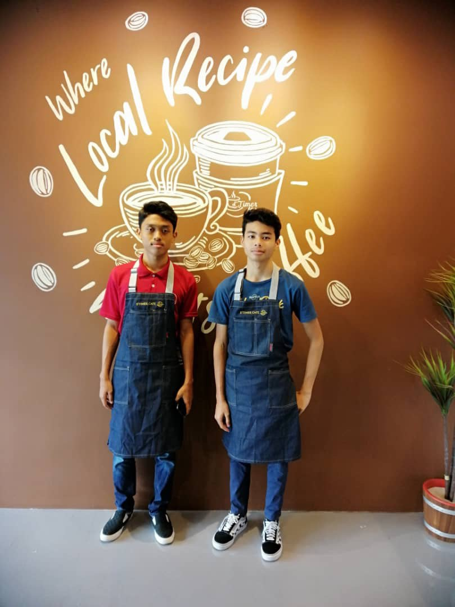
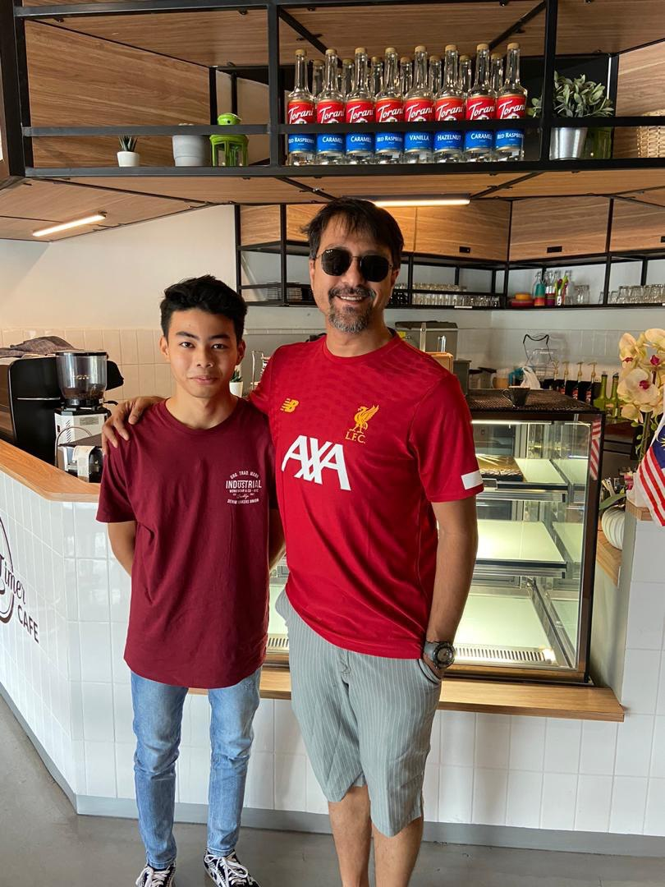

| HOME | BIODATA | EDUCATION | EXPERIENCE | FAMILY | GALLERY | CONTACT |
|---|
M Y E X P E R I E N C E
December 2020
As soon as I finished my SPM, I continued working as a barista at my family's Cafe while I waited for the SPM results to gain work experience and to get some extra money before futher my studies. Among my duties as a barista is memorized ingredients and recipes for many specialty drinks, developed and demonstrated skillful and creative latte art to engage customers and listened carefully to customer requests and created personalized delicious beverage. Due of my love in coffee making, it was my first job ever, and I really enjoy it. My time spent working as a barista is filled with both happy and sad memories.
PICTURE OF ME AS BARISTA
 